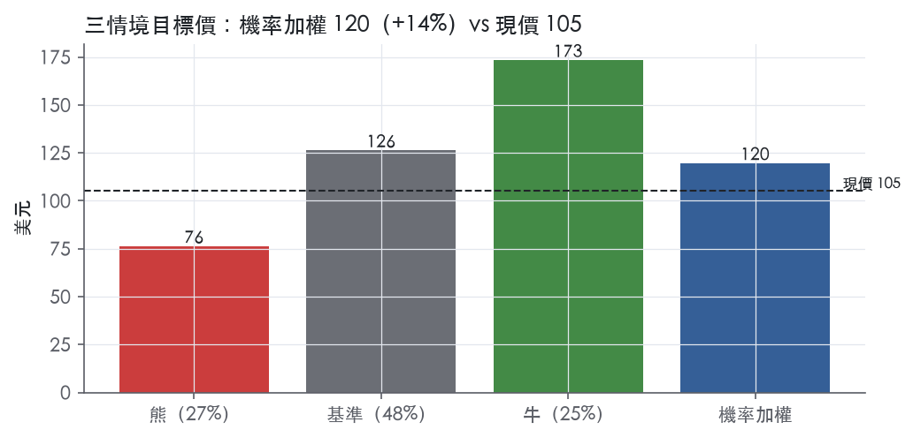
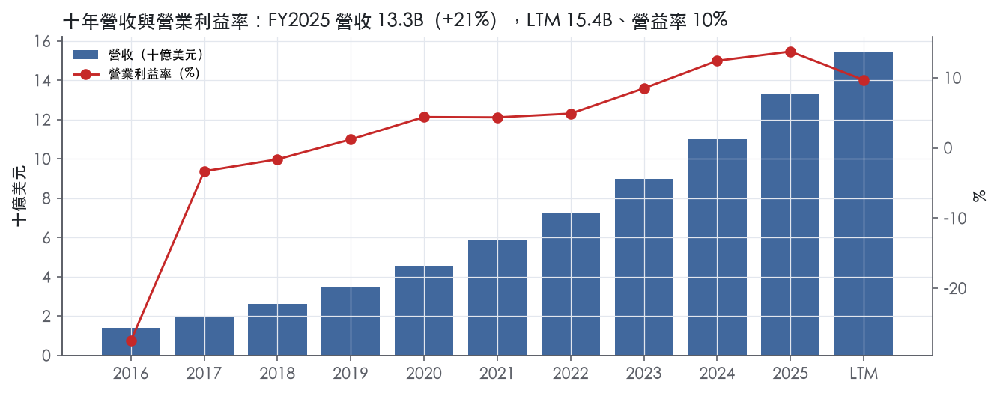
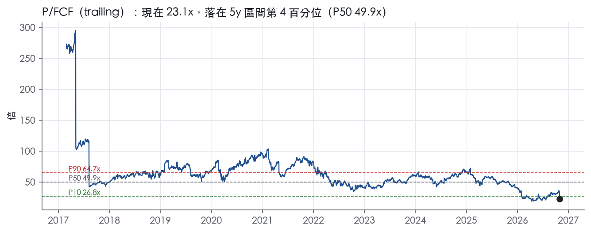
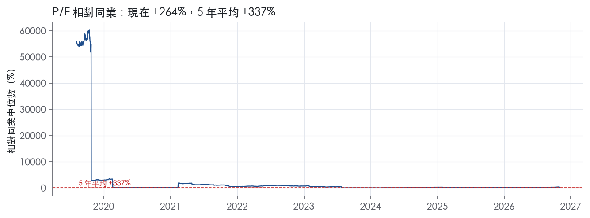
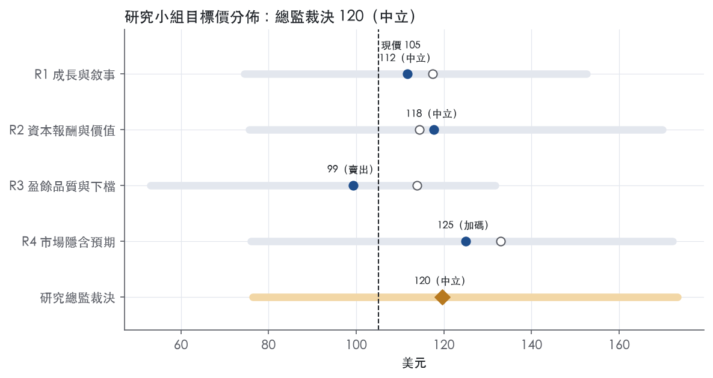
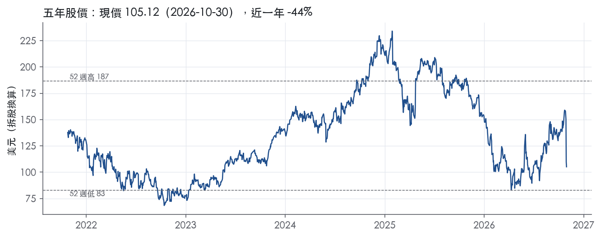

評等總表 › 資訊科技 › NOW
成長折價過深，倍數持平，看多加碼｜評等 中立｜目標價 120
| 報告日 | 評等 | 目標價 | 當時股價 | 超額報酬 |
|---|---|---|---|---|
| 2026-10-30 | 中立 | 120 | 105 | +3.8% |
| 評等 | 中立（邊界，鄰近加碼） |
| 12 個月目標價 | 120 美元 |
| 現價 | 105.12 美元（2026-10-30） |
| 預期報酬 | 股價 +13.8%＋股息 0.0%＝總報酬 +13.8%；同業籃門檻 10.0%，超額 +3.8% |
| 估值方法 | P/FCF 22.0x，套在第 5–8 季的自由現金流（也就是一年後的未來四季） |
| 三情境 | 熊 76／基準 126／牛 173 |
| 研究流程 | 四位研究員兩輪辯論＋研究總監裁決 |
| 資料來源 | SEC EDGAR XBRL、Tiingo、FRED（全免費） |
成長折價過深，倍數持平，看多加碼（研究總監裁決，四位研究員兩輪辯論後）
評等 中立（邊界，鄰近加碼）｜12 個月目標價 120 美元（總監三情境機率加權 125 與研究員中位數 115 各半）｜現價 105.12（2026-10-30）
預期報酬：股價 +13.8%＋股息 0.0%＝總報酬 +13.8%。同業籃門檻 10.0%，超額 +3.8%，離加碼的分界不到三個百分點，屬邊界評等（落在其他級距的機率約四成）。
估值方法：P/FCF 22.0x，套在第 5–8 季的自由現金流（也就是一年後的未來四季）。三情境：熊 76（27%）／基準 126（48%）／牛 173（25%）。
立場看多而評等中立：評等看的是「預期總報酬 13.8% − 同業籃門檻 10.0%」＝超額 3.8%，不是絕對漲跌；看多但超額不足，代表上檔已被同業的預期報酬抵銷。
評等說明：研究總監自己的機率加權目標價 125 美元對應「加碼」；與研究員第二輪中位數 115 美元各半後為 120 美元，落入「中立」。兩者只差一級，請把這檔讀成「加碼～中立」，正文裡總監的立場文字以「加碼」寫成。
什麼會讓研究總監改變看法：FY2026Q4 cRPO 固定匯率年增跌破 17% 或 FY2027 訂閱指引中值低於 17%，成長下修到接近機械路徑、轉中性；FY2026 10-K 揭露 DOJ 停權或 FY2027Q1 營益率低於 9%，熊機率上調、轉看空；毛利率回到 73% 以上且揭露一次性原因，則倍數上修。
| 過去四季（實際，FY2026Q3） | 未來四季 | 第 5–8 季 | 第 9–12 季 | |
|---|---|---|---|---|
| 營收（B） | 15.4B | 18.4B | 21.4B | 24.4B |
| 營收成長 | 21.8% | 19.0% | 16.5% | 14.0% |
| 營業利益率 | 9.7% | 10.5% | 11.5% | 12.5% |
| EPS（美元） | 1.39 | 1.52 | 1.93 | 2.40 |
| EPS 成長 | -16.0% | 8.8% | 27.6% | 23.9% |
| 每股股息（美元） | — | 0.00 | 0.00 | 0.00 |
| P/E（現價） | 75.5x | 69.4x | 54.4x | 43.9x |
| 股息殖利率（現價） | — | — | — | — |
過去四季為申報數字；預測為研究總監的假設、程式計算。倍數與殖利率都用現價計算，用來看現價對應各期獲利的高低。
| 情境 | 機率（歷史） | 故事 | 未來四季營收成長 | 第 5–8 季營益率 | 倍數 | 目標價 | 股價漲跌 |
|---|---|---|---|---|---|---|---|
| 熊 | 27%（27%） | 對應主要風險章風險表第 2 條（DOJ 停權或政府合約終止）疊加第 1 條（Q4 cRPO 跌破 17%、倍數壓縮）與第 5 條（AI 代理商品化），總經走本行下行路徑，倍數降至 WDAY 17.1x 之下 | 13.0% | 9.0% | 16.0x | 76 | -27.4% |
| 基準 | 48%（50%） | cRPO 約兩成延續，營益率自 Q3 9.4% 每年約 1pp 緩升，毛利率停在 70% 附近，倍數持平 | 19.0% | 11.5% | 22.0x | 126 | 20.2% |
| 牛 | 25%（22%） | AI ACV 再上調帶動訂閱再加速、毛利率下滑揭露為一次性並部分回升、SBC 滑坡兌現，27x 仍低於前瞻帶 P10 33.7x | 22.0% | 13.5% | 27.0x | 173 | 64.9% |
目標價由程式依研究總監的驅動與倍數計算；機率由研究總監給定。括號內是歷史頻率：把這檔股票過去十年 12 個月報酬的波動形狀，置中在基準情境，結果落在各情境附近的比例。

四位研究員用不同方法各自估值，回應研究總監的質疑後交出第二輪，最後由總監逐點裁決。各研究員的主張見第七章，裁決理由見第八章，完整論證見《研究底稿》。
| 立場（一輪→二輪） | 加權目標價（一輪→二輪） | 評等（一輪→二輪） | 第二輪倍數 | 熊～牛目標價 | |
|---|---|---|---|---|---|
| R1 成長與敘事 | 看多→中性 | 117→112 | 中立→中立 | 24.0x | 74～153 |
| R2 資本報酬與價值 | 中性→中性 | 114→118 | 中立→中立 | 25.0x | 76～170 |
| R3 盈餘品質與下檔 | 中性→中性 | 114→99 | 中立→賣出 | 23.0x | 53～132 |
| R4 市場隱含預期 | 看多→看多 | 133→125 | 買進→加碼 | 22.0x | 76～172 |
| 研究總監裁決 | 看多 | 120 | 中立 | 22.0x | 76～173 |
目標價由程式依各自的驅動與倍數計算；評等＝機率加權總報酬 − 同業籃門檻。
ServiceNow 是一家企業工作流程自動化與 AI 治理平台公司，核心產品是 ServiceNow AI Platform，自我定位為「Super Intelligence Control Tower」¹。公司在 10-K 中描述自己：「ServiceNow delivers solutions that help public and private organizations govern, secure and manage artificial intelligence and digitalize and streamline workflows to drive collaboration, productivity and better experiences across the enterprise」²。客群是企業級客戶，截至 2025 年 12 月 31 日約有 8,700 家客戶，橫跨多個產業，且來自政府部門的營收占比持續成長²。商業模式以訂閱制為主，部分 AI 與資料產品另有消耗量計價（consumption-based pricing）元件²。FY2025 全年營收 13.28B，年增 20.9%，公司規模已從十年前的小型 SaaS 廠商成長為年營收破百億美元等級的企業軟體巨頭。
公司對外未按營收拆分事業部，產品組織分為四大類：Technology、CRM and Industry、Core Business、Creator and Other²。Technology 產品協助企業整合 IT 風險管理與安全維運，涵蓋 Asset Management、ITOM、ITSM、OT Management、Risk Management、Security Operations、Strategic Portfolio Management²。CRM and Industry 產品串接前中後台的客戶互動流程，包含 Customer Service Management、Field Service Management、Sales and Order Management，並針對金融服務、醫療生技、製造、公部門、零售、科技與電信等產業提供垂直解決方案²。Core Business 產品覆蓋人資、法務、採購與職場服務，包括 HRSD、Legal and Contract Operations、Source-to-Pay Operations、Workplace Service Delivery²。Creator and Other 則是低代碼開發工具與資料基礎設施，包含 App Engine、RaptorDB、Workflow Data Fabric 與隱私安全產品²。10-K 未揭露各分部的具體營收占比與成長率。公司財報口徑以「訂閱營收（subscription）」與「專業服務及其他營收（professional services and other）」區分，FY2026Q3 訂閱營收 3,988M、年增 21%，專業服務及其他營收 118M、年增 10%¹；訂閱營收占總營收比重高達約 97%，是公司最核心的收入結構。
ServiceNow 透過全球直銷團隊銷售訂閱制合約，並透過管理服務供應商與轉售夥伴間接觸達客戶²。公司維持龐大的夥伴生態系，包含雲端服務供應商 AWS、Google、Microsoft、NVIDIA，以及系統整合商 Accenture、Cognizant、Deloitte、EY、Infosys、KPMG²。地理布局上，公司在北美、南美、歐洲、亞洲與澳洲皆設有資料中心，採多實例架構（multi-instance architecture）為每位客戶提供獨立應用層與資料庫²。客戶集中度持續往大型合約移動：FY2026Q3 ACV 超過 5M 美元的客戶數達 680 家，年增約 23%，單季新增超過 5M 美元淨新增 ACV 的交易有 19 筆，年增逾 135%¹；FY2026Q2 則有 123 筆超過 1M 美元淨新增 ACV 的交易，年增近 40%，且 5M 美元以上客戶數為 658 家，年增約 23%³。這顯示公司的成長引擎正從中小型合約往更大額、更深度綁定的企業客戶傾斜。
過去四季營收成長率穩定在 20% 以上並逐季加速，獲利率則因投資與股權激勵結構波動。FY2025Q4 營收 3.57B，年增 20.7%，營益率 12.4%（等對應期別）。FY2026Q1 營收 3.77B，年增 22.1%，營益率回升至 13.3%。FY2026Q2 總營收 3,987M，年增 24%，公司當季 GAAP 營業利益僅 162M（營益率約 4%），但 Non-GAAP 營業利益達 1,173M（約 29.5% margin），net income 298M、每股 0.29 美元，Non-GAAP net income 930M、每股 0.90 美元³；公司當季 cRPO 13.20B、年增 21%，RPO 29.0B、年增 21%，並宣布 ServiceNow AI 年化合約價值（ACV）單季突破 1B 美元³。FY2026Q3 總營收 4,106M，年增 20.5%（常數匯率下 20%），訂閱營收 3,988M、年增 21%，cRPO 達 13.65B、年增 20.5%，RPO 達 29.7B、年增 22%¹；公司當季「beats high end of guidance across all Q3 2026 topline growth and profitability metrics」並「raises full year subscription revenues and free cash flow margin outlook」¹。CFO Gina Mastantuono 表示：「we are capturing this significant opportunity with a capital-efficient model, reducing capex and raising our full-year free cash flow margin target by 100 basis points to 36 percent」¹。公司同時將 2026 年 AI ACV 目標二度上調，由年初的 1B 美元上調至 1.7B 美元，較年初成長 70%¹。LTM 至 FY2026Q3 營收 15.43B、EBITDA 2.76B、FCF 4.75B。
公司將自身定位為「the defining AI enterprise software company of the 21st century」²，策略核心是把 AI 產生的洞察轉化為受治理、可執行的企業行動：「AI excels at analyzing data and generating information, but transforming that information into business outcomes requires infrastructure that can orchestrate action across systems, enforce governance policies, and manage complex workflows」²。CEO Bill McDermott 在 2026 年第三季財報中稱本季為公司作為「Super Intelligence Control Tower」的轉折點，並提出「rule of 57」（訂閱營收成長率加自由現金流利潤率）作為營運框架¹。公司在 2026 年 5 月的 Financial Analyst Day 提出長期目標：訂閱營收規模達 30B 美元以上、AI 貢獻 ACV 比重達 30%、2030 年前達成 Rule of 60+，並承諾將股權激勵費用占營收比重在 2029 年前降至 10% 以下³。公司也持續透過與 OpenAI、NVIDIA、Microsoft、AWS、Anthropic 等建立 AI 治理與算力生態聯盟（Control Tower Alliance）來擴大護城河¹。整體看，ServiceNow 的成長引擎已從傳統 IT 服務管理擴張到 AI 治理與跨系統執行層，這是公司估值溢價的主要敘事來源。但 trailing P/E 75.5x 處於過去五年 11.3% 分位、P/FCF 23.1x 處於過去五年 4.1% 分位，顯示市場目前對其成長故事給予的估值倍數已低於歷史常態區間。股權激勵占營收比重已從 FY2021 的 19.2%降至 FY2025 的 14.7%，朝公司宣示的 10% 目標邁進，是觀察其長期利潤率擴張是否可信的關鍵指標。

ServiceNow 的護城河評為窄，趨勢穩定，主要依據是轉換成本；我們有把握它未來 5 年以上 ROIC 仍高於資本成本，但沒有把握撐到 10 年以上。不給寬評級有三個原因。第一，ROIC 只有 3 年資料，最新一筆停在 FY2022。第二，公司自己形容所處市場是「highly competitive and rapidly evolving market characterized by fragmentation, low barriers to entry」²。第三，近三季毛利率明顯下滑，原因在現有資料中查不到。
優勢核心是轉換成本，無形資產只算次要來源；網路效應、成本優勢、效率規模都找不到足夠證據，所以不列。
轉換成本（主要）：ServiceNow 掌握企業 IT 的系統紀錄，拆掉它等於重建流程與資料底層。
無形資產（次要、偏弱）：專利數量不少，但公司自己說不依賴任何單一專利，真正的價值在流程知識。
毛利率與 FCF 利潤率支持轉換成本的主張，ROIC 與營益率的證據力則不足。
支持的數字
衝突一：ROIC 樣本太少，且已過時
衝突二：營益率波動大，但我們不據此下修
衝突三：毛利率近期轉弱，是最需要追蹤的訊號
最大威脅是 AI 代理層把「執行層」商品化，讓 ServiceNow 從系統紀錄退化成可被替換的管線。
需要追蹤的侵蝕路徑有三條：
| 指標 | 最新 | 十年平均 | 標準差 | 最低 | 最高 |
|---|---|---|---|---|---|
| ROIC | 46.8% | 28.3% | 14.1% | 12.6% | 46.8% |
| 毛利率 | 77.5% | 76.7% | 2.4% | 71.3% | 79.2% |
| 營業利益率 | 13.7% | 1.7% | 11.0% | -27.5% | 13.7% |
| FCF 利潤率 | 34.5% | 26.6% | 8.2% | 3.8% | 34.5% |
| ROE | 15.5% | 10.8% | 15.5% | -17.7% | 38.7% |
程式計算。資本成本代理值（10 年債＋5%）：10.0%；ROIC 平均減資本成本：18.3%；ROIC 有資料的 3 年中，高於資本成本 3 年。
盈餘有現金支撐，LTM 營業現金流／淨利 3.69x、自由現金流／淨利 3.29x，近三年平均分別為 2.69x、2.19x，三項都在綠燈區。應計比率 LTM 為 -12.2%、近三年平均 -13.9%、十年平均 -18.5%，全部是負值且遠低於 5% 的紅燈門檻，代表盈餘沒有被應計項目灌水，反而是現金流持續領先淨利。應收帳款成長減營收成長在 FY2025 為 -3.6pp，營運資金沒有在吃掉盈餘。整體看，現金轉換這一塊是全報告中最乾淨的部分，沒有未解釋的紅旗。
但要注意最近兩個季度現金流有明顯波動：FY2026Q2 CFO 只有 0.59B、FY2026Q3 回升到 0.84B，相較 FY2025 同期 FY2025Q2 的 0.72B、FY2025Q3 的 0.81B 增幅有限，遠不如營收 20% 以上的成長速度（資料包近八季）。這與營益率同期從 16.8%（FY2025Q3）降到 9.4%（FY2026Q3）、毛利率從 77.3% 降到 70.5% 的趨勢一致，顯示近期季度盈餘品質的現金支撐力道正在轉弱，雖然 LTM 滾動數字還是綠燈（資料包近八季）。
拿到的 8-K 新聞稿節錄只到 GAAP 與非 GAAP 營收對照表，Subscription revenues GAAP 3,988M 對應非 GAAP 3,990M、Total revenues GAAP 4,106M 對應非 GAAP 4,107M，差異極小，顯示營收端幾乎沒有非 GAAP 調整空間⁴。但節錄在「Amount（$ millions）| Margin（%）」處被截斷，沒有拿到 SBC、攤銷、重組等損益表層級的非 GAAP 加回明細與金額，因此無法逐項列出調整項。從量化計分表可以確定一件事：本系統的 SBC／營收比率是「不加回」口徑，LTM 仍有 15.1%、近三年平均 16.2%，如果投資圈慣用的非 GAAP EPS 把這塊全部加回，GAAP 與非 GAAP 盈餘的落差會非常大，這是真實的經濟成本，不是會計假象，因為股權酬勞會持續稀釋股東（稀釋股數 LTM 年變動 +0.8%）。在缺乏新聞稿完整非 GAAP 明細表的情況下，估值研究員應假設 SBC 是真實成本，不應全額加回非 GAAP 盈餘。
槓桿結構在過去一年出現明顯轉向：FY2025 年度淨負債為 -4.79B（淨現金），但最新快照淨負債已轉為 2.92B，且近八季總債務從過去的「—」（未揭露／近乎零）跳升到 FY2025Q4 的 1.49B，再到 FY2026Q2、Q3 的 7.52B（資料包近八季）。這代表公司在 2026 年大幅舉債，但淨負債／EBITDA LTM 仍僅 1.06x，遠低於 1.50x 綠燈門檻，槓桿絕對水位目前不是問題。真正的缺口是利息保障倍數：LTM 與近三年平均都顯示「—」（資料未揭露／無法計算），只有十年平均 2.31x，遠低於 8x 綠燈、甚至低於 3x 紅燈門檻。在新增 7.52B 總債務之後，若無法確認當期利息費用與營業利益覆蓋情形，就不能排除利息保障已經轉弱的可能，這是本章最大的資訊缺口。
資本配置方面，（股利＋回購）／淨利 LTM 達 195.3%，遠高於 50% 綠燈門檻，近三年平均 61.7%、十年平均 34.5%，顯示公司正用超過當期淨利的現金做股東回饋，規則本身也提示「>100% 可能在舉債回饋」（量化底稁）。對照同期總債務由近乎零跳升至 7.52B，這個組合支持「舉債加碼回購」的解讀，而不是純粹靠內生現金流回饋股東。稀釋股數 LTM 年變動仍為正的 0.8%（黃燈），代表回購力度還沒能完全抵銷股權酬勞帶來的新增股數，即便公司同時大幅回購。
SBC／營收紅燈（LTM 15.1%，近三年平均 16.2%）：這是真問題而非一次性或口徑假警報，十年平均 18.9% 顯示其實已經是逐年下降的趨勢（FY2016 22.8% 降到 FY2025 14.7%，資料包年度表），但絕對水位仍遠高於 8% 紅燈門檻，是軟體業典型的「現金流好看、GAAP 淨利被稀釋」現象，需要在估值中持續打折，不能視為已解決。
淨利率 FY2016→FY2017 跳動 +24pp：公司當時仍處於虧損轉虧損收斂階段（淨利率仍為負值，資料包年度表），這段屬於早期規模效應顯現、而非會計操縱，但拿到的 10-K Item 7 節錄並未包含實際 MD&A 損益分析段落，無法用原文逐項確認是否有一次性稅務或減損項目，列為資訊缺口而非確認的假警報。
淨利率 FY2018→FY2019 跳動 +19pp：同樣發生在公司由虧轉盈的臨界點（FY2018 淨利 -0.03B 轉 FY2019 淨利 0.63B，資料包年度表），較可能是規模經濟與稀釋股數尚未大增所致，但同樣因為沒有拿到對應年度的 Item 7 文字，無法引用原文確認是否含一次性稅項或商譽調整，列為未完全解釋。
淨利率 FY2019→FY2020 跳動 -15pp：FY2020 正值疫情初期，營業利益率反而小幅上升（1.2%→4.4%，資料包年度表），淨利率的下滑更可能來自稅率或非營業項目變化，而非營運惡化，但缺乏本次拿到的 10-K 文字段落佐證，無法排除一次性項目的可能，仍列為待驗證。
淨利率 FY2022→FY2023 跳動 +15pp：FY2023 淨利率躍升伴隨營益率同步由 4.9% 跳到 8.5%（資料包年度表），方向一致，較像營運槓桿顯現而非單純一次性稅務調整，但同樣沒有本次節錄到對應的 Item 7 文字可以直接引用佐證，列為合理但未經原文確認的解釋。
整體對這四條跳動紅旗的立場：方向上都與同期營益率或淨利絕對水準的結構性變化一致，傾向判斷為業務規模化與轉盈過程中的正常現象，而非盈餘操縱，但因本次資料包只提供 10-K Item 1／1A 摘要而未涵蓋 Item 7 MD&A 實際財務討論段落，無法逐項引用公司原文確認排除一次性損益項目，建議估值研究員在下一輪補齊 Item 7 全文後再做最終確認。
利息保障倍數資料缺口（非程式紅旗，但需一併處理）：LTM 與近三年均顯示「—」，而公司最近兩季總債務已跳升至 7.52B，這個資料缺口本身構成風險，應在下一步要求補齊利息費用數字後重新評估。
盈餘品質整體偏「中」：現金轉換與應計比率乾淨支持 GAAP 淨利可信，但 SBC 長期偏高、近期槓桿快速上升且利息保障數據缺失，估值應以自由現金流或扣除 SBC 影響後的盈餘為基礎，不宜直接套用公司非 GAAP EPS（因非 GAAP 口徑未完整取得、且本系統刻意不加回 SBC）。考量股東回饋已達淨利 195%、疑似舉債支撐回購，加上近兩季毛利率與營益率雙降（77.3%→70.5%、16.8%→9.4%），對 P/FCF 與 EV/EBITDA 類倍數應維持謹慎，不宜給予歷史高分位的乘數。在補齊利息保障與完整非 GAAP 調整明細之前，建議對 GAAP 與非 GAAP 盈餘都做保守處理，槓桿雖未觸及紅燈但趨勢不利，應對目標倍數設定上限而非上緣。
| 項目 | LTM | 近三年 | 十年 | 燈號 | 規則 |
|---|---|---|---|---|---|
| 營業現金流／淨利 | 3.69x | 2.69x | 0.67x | 綠 | ≥1.00x 綠、<0.80x 紅 |
| 自由現金流／淨利 | 3.29x | 2.19x | 0.78x | 綠 | ≥0.90x 綠、<0.60x 紅 |
| 應計比率（(淨利−CFO)／平均總資產） | -12.2% | -13.9% | -18.5% | 綠 | ≤0.0% 綠、>5.0% 紅 |
| SBC／營收 | 15.1% | 16.2% | 18.9% | 紅 | ≤3.0% 綠、>8.0% 紅 |
| 淨負債／EBITDA | 1.06x | -1.87x | -3.56x | 綠 | ≤1.50x 綠、>3.00x 紅 |
| 利息保障倍數（營業利益／利息） | — | — | 2.31x | — | ≥8.00x 綠、<3.00x 紅 |
| 稀釋股數年變動 | 0.8% | 0.9% | 2.8% | 黃 | ≤0.0% 綠、>3.0% 紅 |
| （股利＋回購）／淨利 | 195.3% | 61.7% | 34.5% | 綠 | ≥50.0% 綠、<0.0% 紅 |
| 應收帳款成長 − 營收成長（FY2025） | -3.6pp | — | — | 綠 | ≤5pp 綠、>15pp 紅 |
程式計算；燈號以 LTM（無則近三年平均）判定。
| 風險 | 觸發指標（看什麼數字、在哪裡看） | 對 EPS 的影響方向與粗略幅度 | 未來 12 個月發生機率（高／中／低） | 出處 |
|---|---|---|---|---|
| 1. 估值倍數回歸歷史均值，成長放緩放大修正 | trailing P/E（現 75.5x，5年P50 132.9x，但5年P10僅71.8x）；P/FCF（現 23.1x，5年P10 26.8x）；cRPO 年增率是否低於 20%（8-K） | 方向：負向，幅度：大（EPS不變、倍數壓縮即可拖累股價；若訂閱營收成長率低於20%則EPS預期同步下修） | 中 | 、⁵ |
| 2. 政府合約調查與禁止業務風險 | 10-K Note 18 揭露的 DOJ 調查後續進展；公司是否公告罰款、合約終止或禁止參與未來政府標案 | 方向：負向，幅度：中（若裁罰或禁標，影響集中在政府營收占比持續成長的那塊） | 中 | 10-K 年報 FY2025 Item 1A（風險因素） |
| 3. GAAP 營益率非線性波動（投資周期） | 季度營益率（FY2026Q2 僅 4.1%、FY2026Q3 回升至 9.4%，低於 FY2025 同期 13%+ 水準） | 方向：負向，幅度：中（單季GAAP淨利已出現腰斬，EPS由 0.48 降至 0.27-0.29） | 高 | |
| 4. 總債務快速擴張、利率成本上升 | 總債務（FY2025Q4 1.49B → FY2026Q2/Q3 7.52B）；ust10y（現 4.98%） | 方向：負向，幅度：中（利息費用增加壓低淨利，且若再融資遇到高利率環境成本進一步上升） | 中 | |
| 5. 大型企業客戶競爭與AI替代風險 | 680家>5M ACV客戶數年增率是否低於過去的23%；Microsoft/Salesforce/SAP/Oracle/Workday 新產品發布與定價動作 | 方向：負向，幅度：中（大型合約銷售週期拉長、議價力下降會壓縮毛利率）⁵ | 中 | ⁵、¹ |
風險一：估值倍數回歸，是目前最大的單一風險。公司 trailing P/E 75.5x，雖然處於過去五年僅 11.3% 的分位（意味相對自己歷史是便宜的），但對照五年 P50 高達 132.9x、全期起點更達 148.3x，顯示這支股票的「正常」倍數本身極端依賴持續的高成長敘事。10-K 風險摘要直接寫明：「As our business grows, we expect our revenue growth rate to decline over the long term」⁵。P/FCF 23.1x 處於五年僅 4.1% 的分位，顯示市場已經在用較保守的現金流倍數定價，但若 cRPO 年增率（現 20.5%）繼續下滑至個位數，倍數仍有進一步收縮空間。這條風險不需要公司犯錯，只需要「成長減速」這個已被公司自己寫進風險因子的現象發生。
風險二：政府合約調查，是公司自己揭露但未充分量化的尾部風險。10-K 明確寫出：「the Company informed certain U.S. government agencies of an internal investigation and preliminary findings and is cooperating with, among others, the Department of Justice, which commenced its own investigation into the matters」⁵。公司業務概況也指出「A growing portion of our revenue is generated from sales to government customers」²。10-K 同時列出一旦被認定違規可能面對的後果：「civil and criminal penalties and administrative sanctions, including termination of contracts, forfeiture of profits...fines and suspensions or debarment from future government business」⁵。目前沒有數字可以量化曝險大小，但這是少數「公司已經承認在被調查中」的具體事件，比起一般法律免責條款更該被監測。
風險三：GAAP 利潤率的季度波動幅度遠大於市場敘事暗示的「穩定擴張」。FY2026Q2 GAAP 營益率驟降至 4.1%，EPS 僅 0.29，相較 FY2025Q3 的 0.48 幾乎腰斬，FY2026Q3 回升至 9.4%、EPS 0.27，仍低於去年同期。這與公司在法說會上強調的 Non-GAAP 高利潤率敘事（FY2026Q2 Non-GAAP 營業利益率約 29.5%）形成明顯落差³。SBC 占營收比重雖然逐年下降（FY2021 19.2% 降至 FY2025 14.7%），但 GAAP 與 Non-GAAP 之間的缺口若持續擴大，市場對「Rule of 57」敘事的信任度會打折。
風險四：債務規模在一年內暴增超過五倍，是資料包裡最顯眼卻最少被討論的變化。總債務從 FY2025Q4 的 1.49B 美元，在 FY2026Q2 跳升到 7.52B 美元並維持到 FY2026Q3。目前美國十年期公債殖利率 4.98%、兩年期 4.61%，處於相對高位。10-K 風險摘要本身也列有「We may be adversely affected by our debt service obligations」一條⁵。公司淨負債 2.92B（現金部分抵銷）仍相對市值 109.11B 不算高，但利息費用增加的方向是確定的，需要在下一季財報中追蹤利息支出與現金餘額變化。
風險五：大型企業客戶集中化加深了銷售週期與議價風險。10-K 寫道：「The customer deals we pursue are becoming more complex...require considerable time evaluating our portfolio of products...demand more configuration, integration services and features」⁵。公司揭露 680 家客戶 ACV 超過 5M 美元，年增約 23%¹，顯示營收結構確實往巨型合約傾斜。同時10-K列名的競爭者是 Microsoft、Oracle、SAP、Salesforce、Workday 等資源遠大於 ServiceNow 的巨頭²，一旦其中任一家在 AI 治理層推出有競爭力的捆綁方案，ServiceNow 的議價空間會被壓縮，反映在毛利率或銷售費用率上升。
大合約集中度上升但公司未揭露其占總營收或總ACV的具體比重：680 家 >5M 美元 ACV 客戶、19 筆單季 >5M 美元淨新增 ACV 交易年增超過 135%，這些都是公司主動公布的「好消息」指標，但沒有對應揭露這批大客戶合計占總營收或 cRPO 的比重。如果這個比重已經偏高，單一大客戶流失或續約降價的衝擊會比表面數字顯示的更大，建議每季追蹤「>5M ACV 客戶數年增率」與「整體 cRPO 年增率」之間是否出現剪刀差。
與公有雲服務供應商之間的最低承諾（commitment）金額未量化：10-K 提到「customer demand not materially falling short of our commitments with the public cloud service providers」可能影響其將 instance 遷移至公有雲的策略，暗示公司對 AWS/Google/Microsoft 等雲端供應商有合約承諾，但未揭露具體金額或是否為 take-or-pay 性質。若 AI 相關算力需求不如預期，這類承諾可能轉為資本效率的反向拖累，與公司強調的「capital-efficient model」敘事矛盾，建議在下一次 10-K 或 10-Q 的承諾表（contractual obligations）中確認具體數字。
現價 105.12 對應 trailing（過去四季）P/E 75.5x、EV/EBITDA 40.6x、EV/EBITA 55.2x、EV/Sales 7.3x、FCF 殖利率 4.4%。主要估值倍數 P/FCF 現在 23.1x，落在5 年區間第 4 百分位（P10／P50／P90 = 26.8x／49.9x／64.7x）。

把程式的機械基準預測放到現價下，市場付的前瞻倍數是：P/FCF（未來四季） 22.0x、P/E（未來四季） 76.6x、P/FCF（第 5–8 季） 19.7x、P/E（第 5–8 季） 68.6x。反推 DCF 顯示市價隱含未來五年營收年成長 25.4%（WACC 9.0%、終值成長 3.0%、FCF 利潤率 12.4%，SBC 不加回）。
| 倍數 | 現在 | 5 年 P10 | 5 年 P50 | 5 年 P90 | 現在分位 | 全期 P50 |
|---|---|---|---|---|---|---|
| P/E | 75.5x | 71.8x | 132.9x | 477.9x | 11.3% | 148.3x |
| EV/EBITDA | 40.8x | — | — | — | — | 146.8x |
| EV/EBITA | 55.5x | — | — | — | — | 311.4x |
| EV/EBIT | 75.4x | — | — | — | — | 402.2x |
| EV/Sales | 7.3x | — | — | — | — | 16.1x |
| P/S | 7.1x | 8.9x | 15.4x | 19.9x | 2.2% | 16.0x |
| P/FCF | 23.1x | 26.8x | 49.9x | 64.7x | 4.1% | 58.9x |
trailing 倍數（股價 ÷ 過去四季）；分位以每個交易日計算。
同業籃：CRM, ORCL, WDAY, ADBE, INTU（手動名單（playbooks/peers.yaml））。評等門檻 10.0%：同業「倍數不變下持有一年」的隱含報酬中位數（＝ FCF 殖利率 ×(1＋g)＋g，g 為 5 年營收年複合成長並夾在 −2%～8%），每家夾在 0～15%、P/E 低於 5 倍視為資料可疑而排除，中位數再限制在 10 年債到 10 年債＋5% 之間（同業原始中位數 15.0%）。
| 代號 | 市值 | 5 年營收 CAGR | 營益率 | ROIC | P/E | 5 年 P/E 中位數 | EV/EBITDA | P/FCF | 隱含報酬 |
|---|---|---|---|---|---|---|---|---|---|
| NOW | 109.1B | 24.1% | 9.7% | — | 75.5x | 132.9x | 40.6x | 23.0x | 12.7% |
| CRM | 188.1B | 14.3% | 19.9% | 10.9% | 21.0x | 65.9x | 21.1x | 12.4x | 16.7% |
| ORCL | 395.1B | 10.7% | 32.1% | — | 20.4x | 32.5x | 14.2x | — | 13.3% |
| WDAY | 48.7B | 17.2% | 10.7% | 10.6% | 40.2x | — | 34.4x | 17.1x | 14.3% |
| ADBE | 97.8B | 13.1% | 35.7% | 111.5% | 14.0x | 37.2x | 9.3x | 9.2x | 19.7% |
| INTU | 91.5B | 17.4% | 27.4% | 20.0% | 20.7x | 58.5x | 14.4x | 10.6x | 18.2% |
| 同業中位數 | 14.3% | 27.4% | 15.4% | 20.7x | 47.9x | 14.4x | 11.5x | 10.0% |
全部 trailing，程式以各公司 SEC XBRL 與 Tiingo 行情計算；第一列為本檔。
P/E 相對同業中位數：現在 264.4%，過去 1 年平均 188.2%、3 年 163.1%、5 年 337.0%；EV/EBITDA 相對同業中位數：現在 174.4%，過去 1 年平均 —、3 年 —、5 年 —。

事後實現前瞻倍數帶（P/FCF，2018-11-19..2025-11-17）：P10／P50／P90 = 33.7x／43.2x／59.1x。它是每個交易日的股價除以之後四季實際實現的指標；一年後，今天的第 5–8 季正是那時的未來四季，所以這條帶是 12 個月目標價的同口徑倍數。因為用的是事後實際而非當時預期，過去成長超乎預期的公司這條帶會偏低。
程式的機械基準（成長率從過去四季年增率三年收斂到 6%、利潤率持平）用 事後實現前瞻 P/FCF P50 估值得到 230（119.2%），市場現行前瞻倍數（現價 ÷ 基準 未來四季指標）一年後持平，套在基準 第 5–8 季指標得到 118。這兩個數字只是參考點，不是本報告的目標價；研究員對這個定價的回應在第七章。
下表是每位研究員第一輪（各自獨立）與第二輪（回應研究總監的質疑後）的結果。目標價全由程式依各自的假設計算。
| 立場（一輪→二輪） | 加權目標價（一輪→二輪） | 評等（一輪→二輪） | 第二輪倍數 | 熊～牛目標價 | |
|---|---|---|---|---|---|
| R1 成長與敘事 | 看多→中性 | 117→112 | 中立→中立 | 24.0x | 74～153 |
| R2 資本報酬與價值 | 中性→中性 | 114→118 | 中立→中立 | 25.0x | 76～170 |
| R3 盈餘品質與下檔 | 中性→中性 | 114→99 | 中立→賣出 | 23.0x | 53～132 |
| R4 市場隱含預期 | 看多→看多 | 133→125 | 買進→加碼 | 22.0x | 76～172 |
| 研究總監裁決 | 看多 | 120 | 中立 | 22.0x | 76～173 |
目標價由程式依各自的驅動與倍數計算；評等＝機率加權總報酬 − 同業籃門檻。
分歧度：第一輪 加權目標價 114～133（區間＝現價的 18%）· 倍數 20～25x · 立場 看多×2、中性×2；第二輪 加權目標價 99～125（區間＝現價的 24%）· 倍數 22～25x · 立場 中性×3、看多×1。

| 研究員 | 第二輪主張 | 堅持的理由 |
|---|---|---|
| R1 成長與敘事 | 中性，24x，合約撐住前兩年成長，第三年降到 12%。 | 前兩年成長 19%、16.5% 不動，因為這是已簽約的營收。 |
| R2 資本報酬與價值 | 中性，25x，錨在過去五年市場付的下緣 26.8x 略下。 | 公司舉債回購仍無法縮減股數，現金品質變差，倍數不上調。 |
| R3 盈餘品質與下檔 | 中性，23x，倍數持平，營益率從 9.4% 起算。 | 毛利率降到 70.5% 是結構性的，營益率回不到 FY2025 的 13.7%。 |
| R4 市場隱含預期 | 看多，22x，市場把成長衰減折得太快。 | 待認列合約年增 20.5%，沒有證據支持第二年成長掉到 11%。 |
每位研究員的逐條回應與完整論證見《研究底稿》（NOW_研究底稿_2026-11-01.docx）。
| 分歧點 | R1 | R2 | R3 | R4 | 什麼資料會分出勝負 |
|---|---|---|---|---|---|
| 1. 成長衰減路徑（rev_growth_y2／y3） | 16.5％／12％：y3 超出合約可見期，向基準率中位路徑靠 | 16.5％／14％：RPO 支撐 y2 | 16％／14％：FY2022–25 每年只降 1–2pp，y3 對照同業五年 CAGR 中位 14.3％ | 17％／15％：19→17→15 已比自家降速紀錄快 | FY2026Q4 cRPO 固定匯率年增、FY2027 訂閱指引中值（2027-01 下旬 8-K） |
| 2. 目標倍數與期間口徑 | 24x fcf@ntm，接受市場現況 | 25x fcf@ntm，錨 5 年 P10 26.8x 略下 | 23x fcf@ntm，現行 23.1x 持平 | 22x fcf@q5_q8，略低於市場持平 22.1x | 毛利率下滑是否揭露一次性原因、DOJ 進展，決定能否離開持平 |
| 3. 營益率起點與回升速度（op_margin_y1／y2） | 11％／12.5％：Q2 離群、FY2023–25 費用槓桿 | 11.5％／12％：一次性滾出＋營運槓桿 | 10％／11％：Q3 9.4％ 是結構起點 | 11％／12％：SBC 年降 1pp 是唯一有文件的機制 | FY2026Q4、FY2027Q1 的 GAAP 毛利率與營益率 |
| 4. 熊情境深度與牛熊機率 | 17x；24／45／31 | 17x；20／50／30 | 12x（同業中位）；19／57／24 | 16x；25／48／27 | 程式歷史對照；FY2026 10-K 是否揭露 DOJ 停權 |
| 5. 股數變動（share_change_pct） | +0.8％ | +0.8％ | 0％：回購剛好抵銷 SBC | +0.8％ | FY2026 10-K 期末稀釋股數、回購金額、利息費用 |
分歧一：選 R2（19％／16.5％／14％）。 y1 四人都在 18.5–19％，我接受 19％：cRPO 13.65B 年增 20.5％ 是未來 12 個月要認列的合約¹，而本部四人營收預測誤差中位數全部偏低（−0.4％ 到 −0.7％，預測紀錄表），沒有理由往基準 16.6％ 壓。y2 取 16.5％：RPO 29.7B 年增 22％ 高於營收成長¹，積壓覆蓋在升不在降；R4 的 17％ 與 16.5％ 的差距在預測誤差內，取較低者。y3 取 14％：R1 的 12％ 把 y3 當「連續三年 15％ 以上」的基準率問題處理，但 14％ 本來就不在那條路徑上，且 FY2022–FY2025 成長 22.9％→23.8％→22.4％→20.9％（–FY2025）從無單年斷崖；R4 的 15％ 沒有回答 10-K 明寫的長期下滑⁵與規模稀釋。R2 營收勝過基準只有 46％（預測紀錄表），但這組數字的證據是四人共用的 cRPO／RPO，不是他個人的判斷。y3 在 q5_q8 口徑下不進目標價，只影響敘事與主張。
分歧二：選 R4，22x fcf@q5_q8。 第一，劇本主尺就是 fcf@ntm_plus_1，同口徑對照是事後實現前瞻帶（P10 33.7x、P50 43.2x）。R1–R3 用 trailing 帶配 ntm 不違規，但 trailing 帶是申報 FCF 的倍數，模型 FCF 不含營運資金變動（模型限制）；基準模型 NTM FCF 4.93B 只比申報 LTM FCF 4.75B 高一點，與 16.6％ 的基準成長不相稱。基準模型自己就顯示這個落差：現行 23.1x 持平套 NTM → 110（+4.8％），市場前瞻 22.1x 持平套 Q5–Q8 → 118（+12.2％），兩者都叫「持平」，差在前者把申報口徑的倍數套在模型口徑的 FCF 上，多打了一層折。第二，22x 就是市場現行前瞻倍數 22.0x 一年後持平；本行科技指引是倍數以現值為準，前瞻帶 P10 不能當回歸目標，因為同業 P/E 中位 20.7x 對 5 年中位 47.9x（同業表）顯示重估是類股的。第三，R2 的 25x 自相矛盾：他說 5 年 P50 因類股重估失效，卻用同一條帶的 P10 當錨；再用「FCF 利潤率目標上調、cRPO 20.5％」解釋高於持平，這兩件事已在驅動裡，進倍數就是重複計算。我不離開持平、也不去碰護城河章建議的小幅溢價，理由全是個股的：毛利率 79.2％→70.5％原因未揭露、DOJ 調查未結、舉債 7.52B回購而稀釋股數仍增。利率不是理由，四人第二輪都已刪掉利率。
分歧三：own，10.5％／11.5％／12.5％（假設）。 R3 的起點證據最強：Q2 到 Q3 毛利率 70.7％→70.5％ 幾乎不動（FY2026Q3），營益率卻 4.1％→9.4％（FY2026Q3），所以 Q2 多出來的是營業費用而非銷貨成本，毛利率重設是結構性的，起點是 9.4％ 而非 LTM 9.7％。但 R3 對回升速度給零分：FY2023→FY2025 毛利率 78.6％→77.5％ 近乎持平，營益率 8.5％→13.7％，費用槓桿有紀錄；公司承諾 SBC 2029 年前降到 10％ 以下³。我的路徑是從 9.4％ 起每年約 1pp（假設），比 FY2023–25 慢、與 SBC 承諾的年降幅一致。不取 R1、R4 的 11％／12–12.5％：兩人營業利益誤差中位數 +2.6％、+1.8％ 系統性偏高，R2 −1.1％ 偏低、R3 +0.6％ 近中性（預測紀錄表）；且 Q4 季節性偏低（FY2025Q4 12.4％ 對 FY2025Q3 16.8％，dv.op_margin），NTM 的第一季就是 Q4。
分歧四：牛、熊都取 R4，機率向歷史靠。 R3 的熊 12x 是把「成長跌到同業五年 CAGR 以下、溢價全失」兩年的事壓進 12 個月，熊目標 53.07 比他的基準低 51％（程式結果表），歷史上只有 9％ 的起點走到那麼遠（基準率表）；牛 19％ 對歷史 31％ 沒有個股證據，被程式標記；他立場中性、評等賣出，正文沒有解釋。熊倍數取 16x：WDAY 17.1x（同業表）對應成長 17.2％、營益率 10.7％，熊情境成長 13％／10％ 低於它，倍數在它之下合理；R1、R2 的 17x 只差一檔。R4 的牛情境營益率 12％／13.5％／15％ 在四人牛情境裡偏低，雖然他營業利益偏高，不再下修。機率：R4 距離（+35％／−41％）的歷史對照是 24／50／27（程式結果表），我的距離相近，取 25／48／27。
分歧五：選 R3，0％。 基準模型 −0.4％ 與財務體質章「稀釋股數 LTM 年增 +0.8％」是兩個口徑的 LTM 數字，正好矛盾；舉債後（股利＋回購）／淨利 195.3％（財務體質章）不可持續，SBC 14％ 仍在稀釋。「回購剛好抵銷 SBC、股數不變」是現有資料能支持的最窄主張，資本配置含意也要寫對：舉債回購是在抵銷 SBC，不是在縮股本。
漂移與總經偏離。 四人接受的意見都附了證據（漂移表）：R2 靠攏比例 91％，但變動來自我要求的 V1（資本支出重複扣除修正）與 V4，不退回；R3 −408％ 是背離不是靠攏；R1、R4 未達門檻。drift_rejections 為空。R4 正文對不上來源的「12.5」是他第一輪的 op_margin_y2，來源可查。總經：四人都沒有提偏離，我的假設照本行基準情境（10 年期 4.98 不回落、成長 1.8％）；10 年期敏感度 t 值 −0.7（敏感度表）不可靠，前提隱含影響 0％，不進倍數。接受的偏離：無。
與機械基準不同的驅動（其餘沿用基準）：
目標倍數 22x，metric fcf，horizon q5_q8。錨：市場現行前瞻倍數一年後持平 22.1x；同口徑的事後實現前瞻帶 P10 33.7x／P50 43.2x 是上方對照，不當回歸目標。相對同業：P/FCF 同業中位 11.5x、WDAY 17.1x，NOW 五年 CAGR 24.1％ 對同業 14.3％（同業表），溢價與成長差距大致相稱（判），護城河章的小幅溢價因毛利率未解釋暫不給。報酬來自現金流成長，不來自倍數擴張，符合本行科技指引。
| 情境 | 機率 | 來源 | 營收 y1／y2／y3 | 營益率 y1／y2／y3 | 倍數 | 故事 |
|---|---|---|---|---|---|---|
| 牛 | 25％ | R4 | 22％／20％／18％ | 12％／13.5％／15％ | 27x | AI ACV 目標 1.7B 再上調帶動訂閱再加速，毛利率下滑揭露為一次性並部分回升，SBC 滑坡兌現；27x 仍低於前瞻帶 P10 33.7x |
| 基準 | 48％ | 總監 | 19％／16.5％／14％ | 10.5％／11.5％／12.5％ | 22x | cRPO 約兩成延續，營益率自 9.4％ 緩升，倍數持平 |
| 熊 | 27％ | R4 | 13％／10％／7％ | 9％／9％／9％ | 16x | 風險表第 2 條（DOJ 停權或合約終止）疊加第 1 條（Q4 cRPO 跌破 17％、倍數壓縮）與第 5 條（AI 代理商品化）；總經走本行下行路徑（GDP 0.3、利差 2.30）壓縮企業 IT 預算 |
機率從歷史出發：R4 距離的歷史對照 24／50／27（程式結果表），我的情境距離相近，取 25／48／27，偏離不到 3pp。熊高於牛 2pp 不是本部慣例，是這檔置中分布左偏（P10 −49％ 對 P90 +26％，基準率表）；觸發事件與日期：2027-01 下旬 Q4 8-K 的 cRPO、2027-02 前 FY2026 10-K 的 DOJ 揭露。
市場現行 22.0x 是對「成長收斂到 11.3％、6.0％」的基準路徑付的；我們的差距在盈餘不在倍數，核心是 rev_growth_y2（16.5％ 對 11.3％）與營益率（11.5％ 對 9.7％）。R4 的交集讀法成立：市場不同時相信「成長持續」與「申報 FCF 等於股東現金」；我們接受後者的折價（SBC 當成本、股數不縮、倍數不擴張），不接受前者，因為 cRPO、RPO 是已簽約的。立場看多，預期評等加碼：同倍數同口徑下 R4 機率加權報酬 +18.9％、超額 +8.9％（程式結果表），我的營益率與股數比他保守，結果應略低但仍高於 10％ 門檻；若程式落在中立邊界，立場仍看多，因為門檻來自同業籃，而左偏分布吃掉的部分已在熊機率裡。
現價 105.12 → 點估目標價 126 → 機率加權目標價 125 → 目標價 120，差距拆成五段：成長順延 +13 美元（市場現行倍數 22.1x 一年後持平、獲利照機械基準）；倍數差 -1 美元（總監倍數 22.0x vs 市場持平倍數 22.1x，同一機械基準預測）；盈餘差 +9 美元（總監預測的第 5–8 季自由現金流 6.0B vs 機械基準 5.5B，同一倍數）；情境不對稱 -2 美元（機率加權減點估）；研究小組平均 -5 美元（總監機率加權 125 與研究員第二輪中位數 115 各半）。各段相加等於目標價減現價。本階段未接賣方共識，差距以市場隱含預期為對照。
| 驅動 | 機械基準 | 研究總監 | 差異 |
|---|---|---|---|
| 未來四季營收成長 | 16.6% | 19.0% | +2.4 pp |
| 第 5–8 季營收成長 | 11.3% | 16.5% | +5.2 pp |
| 第 9–12 季營收成長 | 6.0% | 14.0% | +8.0 pp |
| 未來四季營益率 | 9.7% | 10.5% | +0.8 pp |
| 第 5–8 季營益率 | 9.7% | 11.5% | +1.8 pp |
| 第 9–12 季營益率 | 9.7% | 12.5% | +2.8 pp |
| D&A／營收 | 8.2% | 8.2% | ＝ |
| 資本支出／營收 | 3.8% | 3.8% | ＝ |
| SBC／營收 | 15.0% | 14.0% | -1.0 pp |
| 稅率 | 18.0% | 18.0% | ＝ |
| 股數年變動 | -0.4% | 0.0% | +0.4 pp |
研究總監只寫偏移，未寫的沿用基準。
| 期 | 營收 | 成長 | 營益率 | 營業利益 | EBITDA | EBITA | 淨利 | EPS | FCF | 期末淨負債 |
|---|---|---|---|---|---|---|---|---|---|---|
| 未來四季 | 18.4B | 19.0% | 10.5% | 1.9B | 3.4B | 2.6B | 1.6B | 1.52 | 5.0B | 0.8B |
| 第 5–8 季 | 21.4B | 16.5% | 11.5% | 2.5B | 4.2B | 3.2B | 2.0B | 1.93 | 6.0B | -2.4B |
| 第 9–12 季 | 24.4B | 14.0% | 12.5% | 3.0B | 5.1B | 3.9B | 2.5B | 2.40 | 7.0B | -6.5B |
程式依上表的驅動計算；季度用最近四季季節性分攤；不含營運資金變動。
估值方法：P/FCF 22.0x，套在第 5–8 季的自由現金流（也就是一年後的未來四季）。研究總監目標倍數的錨：市場現行前瞻 P/FCF 一年後持平 22.1x（套基準 Q5–Q8）；事後實現前瞻帶 P10 33.7x 為同口徑上方對照但類股重估後不當回歸目標；相對同業 P/FCF 中位 11.5x、WDAY 17.1x 的溢價與成長差距相稱，毛利率未解釋、DOJ 未結、舉債回購使我不高於持平。
計算：自由現金流（第 5–8 季） 6.0B × 22.0x＝權益價值 131.1B，除以第 5–8 季的股數 → 點估目標價 126（20.2%）；隱含 P/E（未來四季）83.3x、P/E（第 5–8 季）65.3x、EV/EBITDA（第 5–8 季）31.3x、FCF 殖利率（第 5–8 季）4.5%。
總監三情境機率加權目標價 125，研究員第二輪中位數 115，兩者各半＝目標價 120；預期報酬 股價 +13.8%＋股息 0.0%＝總報酬 +13.8%；減評等門檻 10.0%（同業籃隱含報酬中位數（CRM, ORCL, WDAY, ADBE, INTU））＝超額報酬 +3.8% → 評等 中立（超額 >+15% 買進、+5～+15% 加碼、±5% 中立、−5～−15% 減碼、<−15% 賣出）。同一份資料重開研究小組，超額約有正負四個百分點的雜訊（一個標準差，二十檔實測）；以此估計，評等落在其他級距的機率約四成。超額離加碼的分界不到三個百分點，應視為邊界評等。
| 情境 | 機率 | 未來四季成長 | 第 5–8 季成長 | 第 5–8 季營益率 | 自由現金流（第 5–8 季） | 倍數 | 目標價 |
|---|---|---|---|---|---|---|---|
| 熊 | 27% | 13.0% | 10.0% | 9.0% | 5.0B | 16.0x | 76 |
| 基準 | 48% | 19.0% | 16.5% | 11.5% | 6.0B | 22.0x | 126 |
| 牛 | 25% | 22.0% | 20.0% | 13.5% | 6.7B | 27.0x | 173 |
| 主張 | 驗證日 | 看哪個數字 | 門檻 |
|---|---|---|---|
| FY2026Q4 cRPO 固定匯率年增率不低於 19% | 2027-01-31 | cRPO 年增率（固定匯率，8-K） | >= 19% |
| FY2027 訂閱營收成長指引中值不低於 18% | 2027-02-15 | FY2027 訂閱營收成長指引中值（8-K） | >= 18% |
| FY2027Q1 GAAP 營益率回到 10% 以上且毛利率守住 70%，證明 9.4% 是結構性起點而非下滑途中 | 2027-04-30 | 、 | 營益率 >= 10% 且毛利率 >= 70% |
| FY2026 10-K 未揭露 DOJ 調查導致停權、禁標或政府合約終止 | 2027-02-28 | 10-K FY2026 法律訴訟揭露 | 無停權／禁標／合約終止 |
| 公司公布 FY2026 全年 FCF 利潤率達 35% 以上 | 2027-01-31 | FY2026 FCF 利潤率（公司口徑，8-K） | >= 35% |
到期由程式結算（第 5 階段帳本）。
內文上標數字對應下列公司申報文件；未標上標的分析與判斷，是研究小組的觀點。報告中的每個數字都經程式逐一核對資料包或原文。
| 期 | 營收 | 成長 | 毛利率 | 營益率 | EBITDA | 淨利 | EPS | CFO | FCF | ROIC | 淨負債 | 稀釋股數 |
|---|---|---|---|---|---|---|---|---|---|---|---|---|
| FY2016 | 1.4B | — | 71.3% | -27.5% | -0.3B | -0.4B | — | 0.2B | 0.1B | — | — | 0.8B |
| FY2017 | 1.9B | 39.0% | 73.4% | -3.3% | 0.0B | -0.1B | -0.14 | 0.6B | 0.5B | — | — | 0.9B |
| FY2018 | 2.6B | 35.0% | 76.1% | -1.6% | 0.1B | -0.0B | -0.03 | 0.8B | 0.6B | — | — | 0.9B |
| FY2019 | 3.5B | 32.6% | 77.0% | 1.2% | 0.3B | 0.6B | 0.64 | 1.2B | 1.0B | — | -1.0B | 1.0B |
| FY2020 | 4.5B | 30.6% | 78.2% | 4.4% | 0.5B | 0.1B | 0.12 | 1.8B | 1.4B | 12.6% | -1.5B | 1.0B |
| FY2021 | 5.9B | 30.5% | 77.1% | 4.4% | 0.7B | 0.2B | 0.23 | 2.2B | 1.8B | 25.5% | -3.2B | 1.0B |
| FY2022 | 7.2B | 22.9% | 78.3% | 4.9% | 0.8B | 0.3B | 0.32 | 2.7B | 2.2B | 46.8% | -4.3B | 1.0B |
| FY2023 | 9.0B | 23.8% | 78.6% | 8.5% | 1.3B | 1.7B | 1.68 | 3.4B | 2.7B | — | — | 1.0B |
| FY2024 | 11.0B | 22.4% | 79.2% | 12.4% | 1.9B | 1.4B | 1.37 | 4.3B | 3.4B | — | — | 1.0B |
| FY2025 | 13.3B | 20.9% | 77.5% | 13.7% | 2.6B | 1.7B | 1.67 | 5.4B | 4.6B | — | -4.8B | 1.0B |
SEC XBRL；每股數據已依拆股換算到現在股數基準。EBITDA 空白 = 該年無形攤銷在 companyfacts 中缺 tag。
| 期 | 期末 | 推導 | 營收 | 毛利率 | 營益率 | EBITDA | 淨利 | EPS | CFO | FCF | 現金 | 總債務 |
|---|---|---|---|---|---|---|---|---|---|---|---|---|
| FY2023Q4 | 2023-12-31 | Q4 | 2.4B | 78.8% | 11.1% | 0.4B | 0.3B | 0.29 | 1.6B | 1.3B | 1.9B | — |
| FY2024Q1 | 2024-03-31 | 2.6B | 80.0% | 12.8% | 0.5B | 0.3B | 0.33 | 1.3B | 1.2B | 2.1B | — | |
| FY2024Q2 | 2024-06-30 | 2.6B | 79.0% | 9.1% | 0.4B | 0.3B | 0.25 | 0.6B | 0.4B | 2.2B | — | |
| FY2024Q3 | 2024-09-30 | 2.8B | 79.1% | 14.9% | 0.6B | 0.4B | 0.41 | 0.7B | 0.5B | 1.9B | — | |
| FY2024Q4 | 2024-12-31 | Q4 | 3.0B | 78.7% | 12.6% | 0.5B | 0.4B | 0.37 | 1.6B | 1.4B | 2.3B | — |
| FY2025Q1 | 2025-03-31 | 3.1B | 78.9% | 14.6% | 0.6B | 0.5B | 0.44 | 1.7B | 1.5B | 3.4B | — | |
| FY2025Q2 | 2025-06-30 | 3.2B | 77.5% | 11.1% | 0.5B | 0.4B | 0.37 | 0.7B | 0.5B | 3.1B | — | |
| FY2025Q3 | 2025-09-30 | 3.4B | 77.3% | 16.8% | 0.8B | 0.5B | 0.48 | 0.8B | 0.6B | 2.7B | — | |
| FY2025Q4 | 2025-12-31 | Q4 | 3.6B | 76.6% | 12.4% | 0.7B | 0.4B | 0.38 | 2.2B | 2.0B | 3.7B | 1.5B |
| FY2026Q1 | 2026-03-31 | 3.8B | 75.1% | 13.3% | 0.8B | 0.5B | 0.45 | 1.7B | 1.5B | 2.7B | — | |
| FY2026Q2 | 2026-06-30 | 4.0B | 70.7% | 4.1% | 0.6B | 0.3B | 0.29 | 0.6B | 0.5B | 2.5B | 7.5B | |
| FY2026Q3 | 2026-09-30 | 4.1B | 70.5% | 9.4% | 0.8B | 0.3B | 0.27 | 0.8B | 0.7B | 2.4B | 7.5B |
流量項目由 10-Q 的年初至今數拆成單季；Q4 = 年度 − 九個月。

本報告由 equity-desk 多代理系統產出，建置中版本，僅供內部研究與方法驗證，不構成投資建議。所有數字以 datapack.json 為準。